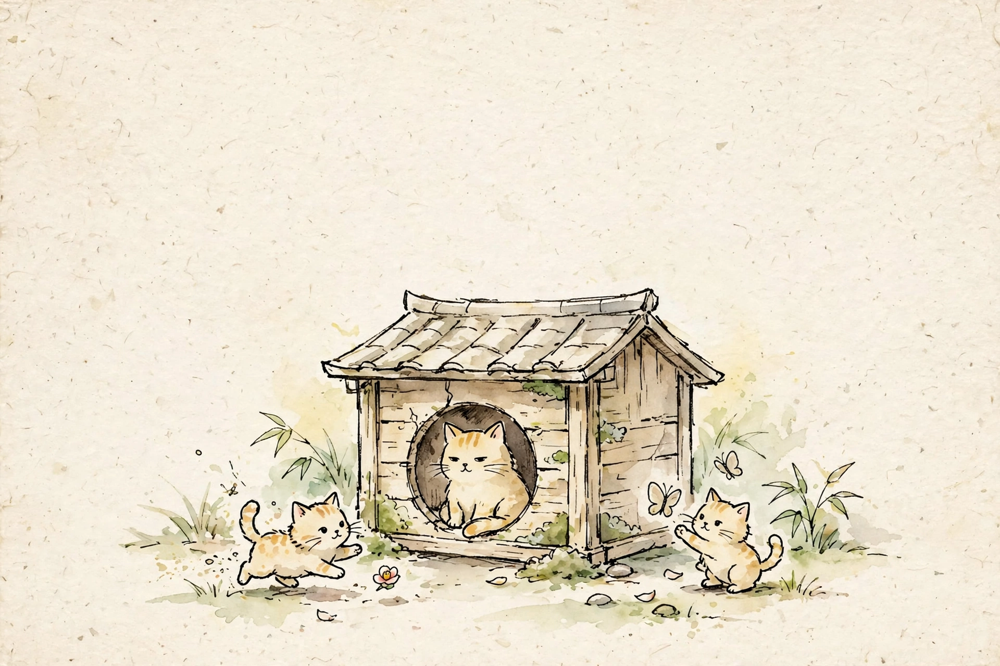

整点meow活
生活
MeoW Life
猫屋搭建
2026 年 11 月 15–18 日 · 南塘
来不来都可以。
👆 点图片，进 Meow传
MeoW 星是底，活动是季节
MeoW 星是常驻的基础：人与人、人与宠物之间，一种生活方式的构建。活动是季节性、周期性的——猫屋搭建是当前这一季。下一季会用同样的结构，在这里长出来。
故事与往期
一只猫在去年 10 月闯进了一个人的生活。现在，FC 想邀请更多人，一起来体会这种生活。
往期活动：猫屋搭建是第一次。下一个活动会用同样的结构，在这里长出来。
欢迎你来
- 瞄一眼
- 描写、描绘故事
- 描绘喵星球的环境
- 喵一声